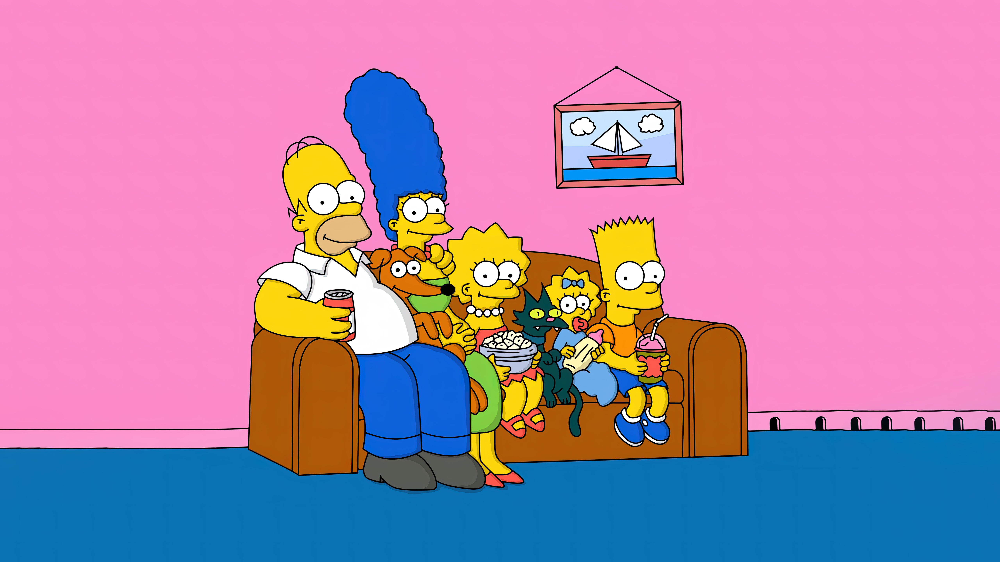
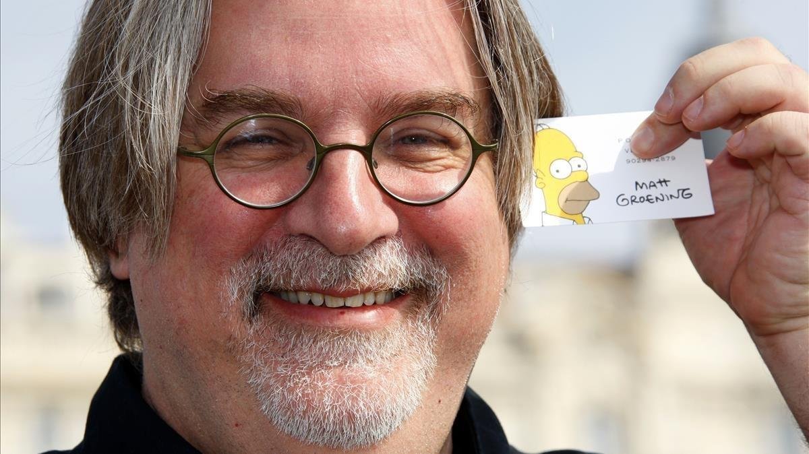

Prólogo
Los Simpsons es una serie estadounidense de comedia en formato de animación, creada por Matt Groening para Fox Broadcasting Company y emitida en varios países del mundo. La serie es una sátira de la sociedad estadounidense que narra la vida y el día a día de una familia de clase media de ese país cuyos miembros son Homer, Marge, Bart, Lisa y Maggie Simpson que viven en un pueblo ficticio llamado Springfield.
La familia fue creada por Groening y poco después debutó en una serie de cortos de animación producidos por James L. Brooks. Groening creó una familia disfuncional y nombró a sus personajes en honor a los miembros de su propia familia, sustituyendo su propio nombre por Bart. Los cortos pasaron a formar parte de El show de Tracey Ullman el 19 de abril de 1987, pero después de tres temporadas se decidió convertirlos en una serie de episodios de media hora en horario de máxima audiencia. Constituyó un éxito de la cadena Fox y fue la primera serie de dicho canal en llegar a estar entre los 30 programas más vistos en la temporada 1992-1993 en Estados Unidos.
Desde su debut el 17 de diciembre de 1989, se han emitido más de 700 episodios, habiendo finalizado su trigesimocuarta temporada. En el final de la decimoctava temporada, el 20 de mayo de 2007, se emitió en Estados Unidos el episodio 400: You Kent Always Say What You Want. En la mayoría del mundo los días 26 y 27 de julio de 2007 se estrenó Los Simpson: la película, la cual recaudó cerca de 526 millones de dólares en todo el mundo.
Los Simpson ha ganado numerosos premios desde su estreno como serie, incluyendo 33 premios Emmy, 32 premios Annie y un premio Peabody. La revista Time del 31 de diciembre de 1999 la calificó como la mejor serie del siglo xx, y el 14 de enero de 2000 recibió una estrella en el Paseo de la Fama de Hollywood. Los Simpson es una de las series estadounidenses de dibujos animados de mayor duración y el programa estadounidense de animación más largo. El gruñido de fastidio de Homer «D'oh!» ha sido incluido en el diccionario Oxford English Dictionary, mientras que la serie ha influido en muchas comedias de situación animadas para adultos. El 26 de enero de 2023, Fox renovó la serie para una trigesimoquinta y trigesimosexta temporada.
Historia
James L. Brooks había hablado con Matt Groening sobre la creación de una serie de cortometrajes de animación, que Groening iba a basar en su cómic Life in Hell. Al darse cuenta de que convertir Life in Hell en una animación supondría la rescisión de los derechos de publicación de la obra de su vida, escogió otro enfoque y creó su particular modelo de familia disfuncional, cuyos personajes eran homónimos respecto a los mi de su propia familia excepto en su propio caso, en que se sustituyó a sí mismo por el y personaje de Bart. Groening ideó a la familia Simpson en el vestíbulo de la oficina de Brooks.
La familia Simpson apareció por primera vez en los cortos de El show de Tracey Ullman e 19 de abril de 1987. Groening solo presentó unos bocetos básicos a los animadores y asumió que los corregirían en producción. Sin embargo, los animadores se limitaron a seguir su esquema, dando lugar a la cruda apariencia de los personajes de los cortos iniciales.
En 1989 un equipo de productoras adaptó Los Simpson al formato de serie demedia hora para Fox Broadcasting Company. El equipo incluía lo que es la actual compañía de animación Klasky Csupo. Jim Brooks negoció una cláusula con Fox que impedía a esta última interferir en el contenido dela serie. Groening dijo que su intención al crear la serie era ofrecer una alternativa a loque llamaba la «basura establecida» que estaban viendo. La serie de media hora se estrenó el 17 de diciembre de 1989 con Simpsons Roasting on an Open Fire, un especial de Navidad. Some Enchanted Evening fue el primer episodio en producirse pero no se emitió hmayo de 1990 por problemas con la animación.
Los Simpson fue la primera serie de Fox en colocarse en el ranking de las 30 series más vistas. Este éxito hizo que Fox programara Los Simpson en el mismo horar The Cosby Show para hacerle competencia, un cambio que dañó los datos de audiencia de Los Si En 1992, Tracey Ullman demandó a la cadena, argumentando que su show había sido la fuen éxito de Los Simpson y exigiendo a Fox un porcentaje sobre los beneficios de la petición que fue denegada por los jueces.
Escenario
Los Simpson tiene lugar en la ficticia ciudad estadounidense de Springfield, sin coordenadas geográficas o localizaciones concretas que permitan conocer en qué estado de Estados Unidos se encuentra. A pesar de esto, los fans de la serie han tratado de identificar la localización de la ciudad prestando atención al paisaje, vecindario, marcas geográficas y otras pistas. Como respuesta, la serie se muestra intencionalmente evasiva a facilitar la localización. El nombre "Springfield" es tan común en Estados Unidos que aparece en la mitad de los estados. La geografía de Springfield y alrededores contiene costas desiertos, zonas agrícolas extensas, altas montañas y cualquier elemento necesario para el desarrollo del argumento o de los chistes. De todas formas, Groening ha dicho que Springfield tiene mucho en común con Portland, Oregon, la ciudad donde creció.

La familia Simpson vive en el 742 de Evergreen Terrace (en Hispanoamérica: Avenida Siempreviva 742), Springfield, en honor a la calle donde vivía Matt Groening cuando era niño. Se dan varios números alternativos de la casa Simpson en varios episodios, entre ellos: 59 "Lisa Goes to Washington"), 94 ("Blood Feud" y "Bart, el amante"), 723 ("Homer the Vigilante"), 743 ("Beyond Blunderdome") y 1094 ("New Kid on the Block"), además de "Spalding Way 430" ("Kamp Krusty"). El hecho se usa repetidamente para evitar ubicar específicamente a Springfield so mapa de los Estados Unidos. Se ha sugerido que la dirección usada en /Kamp Krusty/ apunta al actor y comediante Spalding Gray.